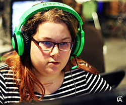
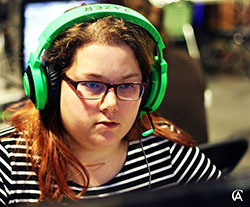

Personne imagitive et créative, je me suis toujours passionnée par la littérature et l'écriture, ainsi qu'à la création de divers personnages et d'univers. C'est pourquoi dès le primaire, j'ai joué à des jeux de rôle à l'écrit sur forum ou bien sur papier.
Bien que je jouais aux jeux vidéo étant jeune, la passion s'est davantage affinée au Cégep avec World of Warcraft, League of Legends et Overwatch.
 

En mars 2018, je suis maintenant une heureuse diplômée en conception de jeux vidéo du Cégep de Limoilou, et j'amène avec moi un riche bagage composé de projets dans lesquels j’ai appris énormément et dont je suis fière. J’ai également participé à des tournois dans une équipe amateure de League of Legends au WonderLan, une compétition à Chicoutimi.
Afin de m’orienter vers mes multiples passions, mon ultime but est de travailler en game design dans une orientation expérience joueur, et ce, à l’aide d’analyse de données de joueurs et de playtests. Ainsi, je peux autant mettre à profit mes connaissances en jeu vidéo, mais aussi en psychologie.